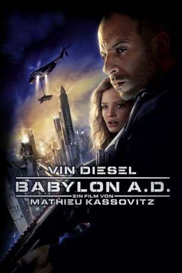

#2223 Babylon A.D.
 
 IMDB-Wertung: 5.6 / 10
IMDB-Wertung: 5.6 / 10  Metascore: 26
Metascore: 26 
Ein namenloses Land irgendwo in Osteuropa. Chaos, Armut, Schmutz und Gewalt, wohin man blickt. Hier lebt Toorop, ein wortkarger Abenteurer und Söldner, der für Geld jeden Auftrag erledigt. Toorop stellt keine Fragen und kennt keine Moral – solange das Honorar stimmt. Dieser Kodex hat ihm zahlreiche Feinde eingebracht; deren Hass wiederum lässt seine Überlebenschancen täglich weiter schmelzen. So klingt das Angebot von Mafia-Boss Gorsky denn auch zu verlockend, um es auszuschlagen: Toorop soll ein junges Mädchen nach New York schmuggeln. Als Gegenleistung will Gorsky ihm einen Neuanfang in Amerika ermöglichen. Aurora, die junge Frau, die Toorop unversehrt auf dem anderen Kontinent abliefern soll, ist – obwohl anders vereinbart – nicht allein. Sie wird begleitet von einer resoluten Nonne, die sich als Ein-Frau-Leibwache ihres Schützlings versteht. Und tatsächlich: Schon nach kurzer Zeit eskaliert die Reise zu einem alptraumhaften Trip in die Gefahr.
Jahr: 2008
Dauer: 90 Minuten
FSK: 16
Land: Frankreich Studio: Concorde FilmverleihTonspuren: DTS - ,
Untertitel: Deutsch,
Auflösung: 1080p (1920x824) Größe: 7055 MB
Genre: Action, Abenteuer, Sci-Fi, Thriller
Regisseur:  Mathieu Kassovitz
Mathieu Kassovitz
Drehbuch: Maurice G. Dantec, Mathieu Kassovitz, Éric Besnard, Joseph Simas
Soundtrack: Atli Örvarsson
Darsteller:
 Vin Diesel als Toorop
Vin Diesel als Toorop Michelle Yeoh als Sister Rebeka
Michelle Yeoh als Sister Rebeka Mélanie Thierry als Aurora
Mélanie Thierry als Aurora Lambert Wilson als Darquandier
Lambert Wilson als Darquandier Mark Strong als Finn
Mark Strong als Finn Charlotte Rampling als The High Priestess
Charlotte Rampling als The High Priestess Gérard Depardieu als Gorsky
Gérard Depardieu als Gorsky David Belle als Kid with Tattoos
David Belle als Kid with Tattoos- Jérôme Le Banner als Killa
- Joel Kirby als Dr. Newton
- Souleymane Dicko als Jamal
- Radek Bruna als Karl
- Jan Unger als Fight Promoter
- Abraham Belaga als Assistant to High Priestess
- Gary Cowan als Neolite Executive
 David Gasman als Neolite Researcher
David Gasman als Neolite Researcher- Lemmy Constantine als Neolite Marketing Executive
- Peter Thias als Neolite MIB
- Curtis Matthew als Submarine Captain
- Magda Vavrusova als Woman in Toorop's Corridor
- Filip Matejka als Young boy on Toorop's Stairs
- Robert Polo als Border Guard , uncredited
- Jeff Smith als Border Guard , uncredited
Datei: X:\2008(A-F)\Babylon A.D. (2008, FSK16, 1920x824).mkv seit 21.10.2015
Festplatte: HD 2007(A-Z)-2008(A-F)
 Es gibt insgesamt 66 Filme in der Gruppe '2008(A-F)'
Es gibt insgesamt 66 Filme in der Gruppe '2008(A-F)'